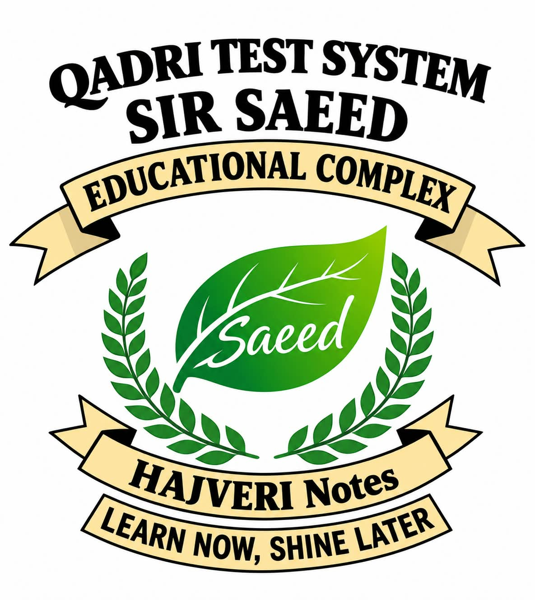

SIR SAEED EDUCATIONAL COMPLEX
Some places teach subjects. Some places shape people. Some become a part of your journey.
MORE THAN AN INSTITUTE
An educational institution is not only about classrooms, books and examinations. It is also about the people, experiences and opportunities that help us become better versions of ourselves.
A PERSONAL JOURNEY
When I joined Sir Saeed Educational Complex, I did not have much experience in teaching. I simply had the opportunity to begin.
With time, teaching became more than just a responsibility. It became a journey of learning, observing, improving and becoming more confident.
Looking back, I realize that every experience contributed something valuable to the teacher I am becoming today.
THE ALL-ROUNDER
Teaching is not limited to one subject when knowledge is truly understood. The ability to guide students across different areas reflects versatility, experience and dedication.
LESSONS BEYOND BOOKS
Becoming more confident while standing in front of a classroom.
Understanding that teaching carries responsibility far beyond a lesson.
Learning how dedication and consistency shape a professional teacher.
Realizing that a good teacher never stops learning.
A SMALL SURPRISE
Scratch the card to reveal a message.